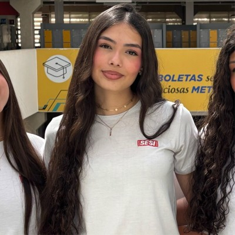

Maria Clara dos Santos
Sorocaba, São Paulo, Brasil •mariacdsanttos@icloud.com • (15)98133-2000 • linkedin.com/in/maria-clara-santos-in

Me chamo Maria Clara dos Santos, nasci no dia 20 de Julho de 2009, completei 17 anos em 2026.
Atualmente, estou no segundo ano do ensino médio da escola SESI CE123 na região de Sorocaba, juntamente com o ensino técnico da escol SENAI Gaspar Ricardo Júnior, atualmente, no primeiro ano.
Sou uma aluna regular, com frequencia acima de 95% e notas acima da média(7).
Já fiz partes de alguns projetos dentro da escola e do SENAI, entre eles: